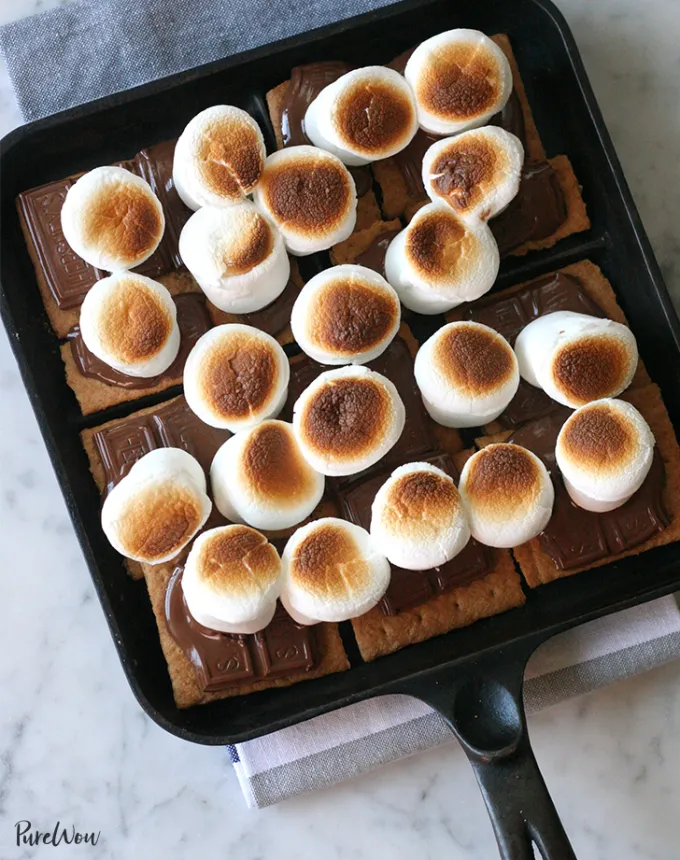
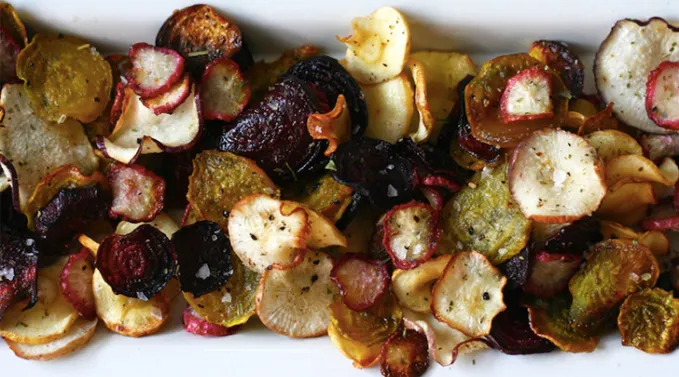
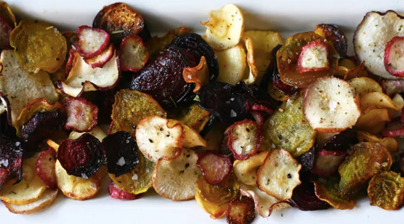

Broiler S'mores
Home

Description
Boiler S’mores — proof that you don’t need a campfire to burn your tongue on molten marshmallow.
Ingredients
- 12 graham-cracker squares
- 3 chocolate bars, broken into pieces (or 1⅓ cups chocolate chips)
- 12 jumbo marshmallows
Step by Step Guide
- Preheat the broiler on high heat.
- In a medium cast-iron or other ovenproof skillet, arrange half the graham crackers in the base of the pan.
- Place the chocolate on top of the graham crackers in an even layer. Top the chocolate with marshmallows. You can let them touch, but give them a little room to spread.
- Place the pan under the broiler and watch for the marshmallows to toast, about 1 to 2 minutes. (This can happen pretty fast, so keep an eye on them.) When the marshmallows are golden brown, remove the pan from the broiler, using an oven mitt.
- Let cool slightly, then top with the remaining graham crackers. Serve immediately.
Fancy something different? why not try these instead?
 
